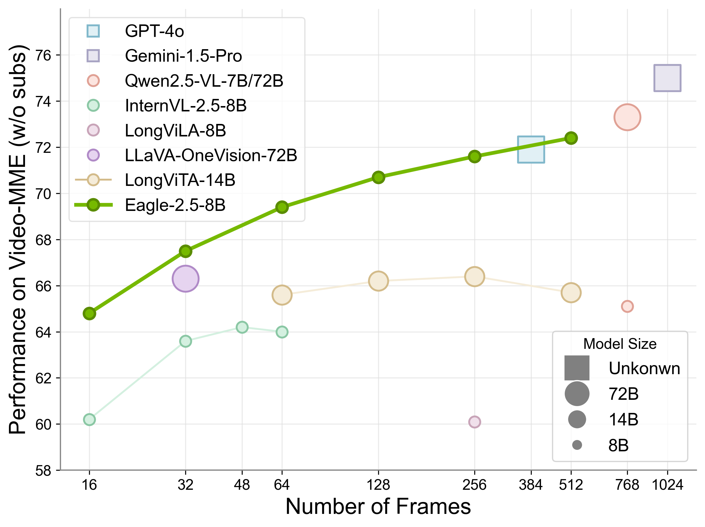
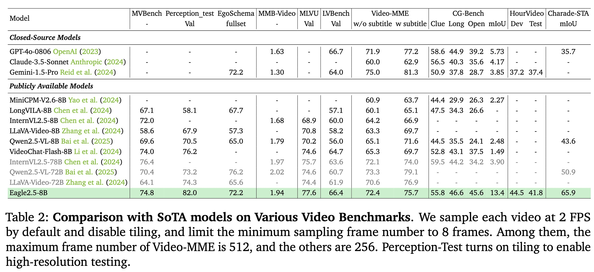
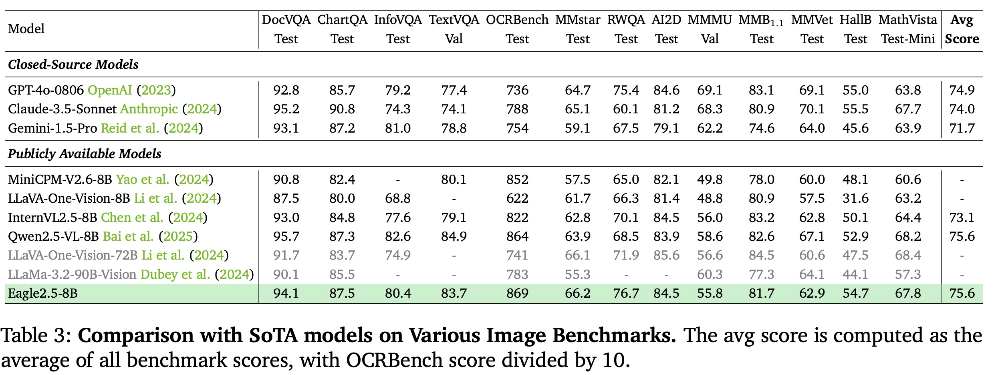
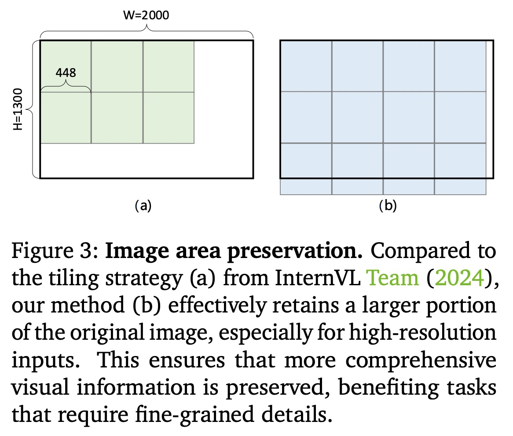
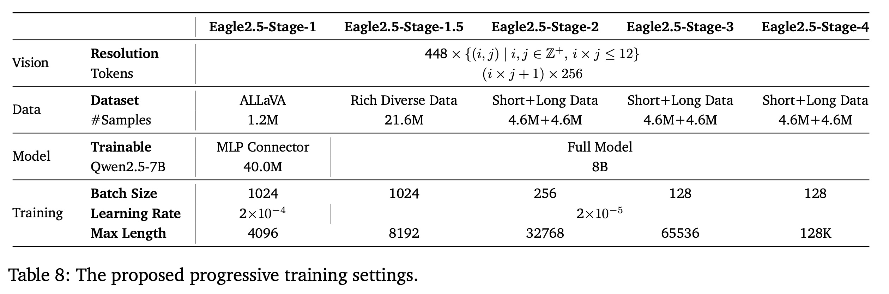
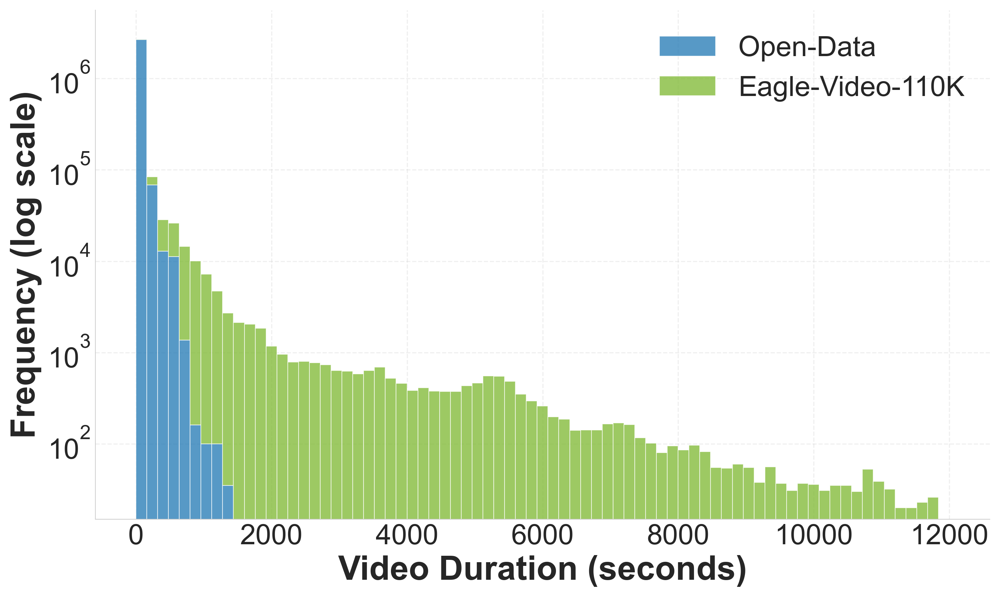
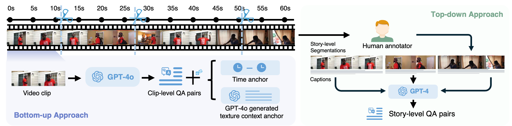
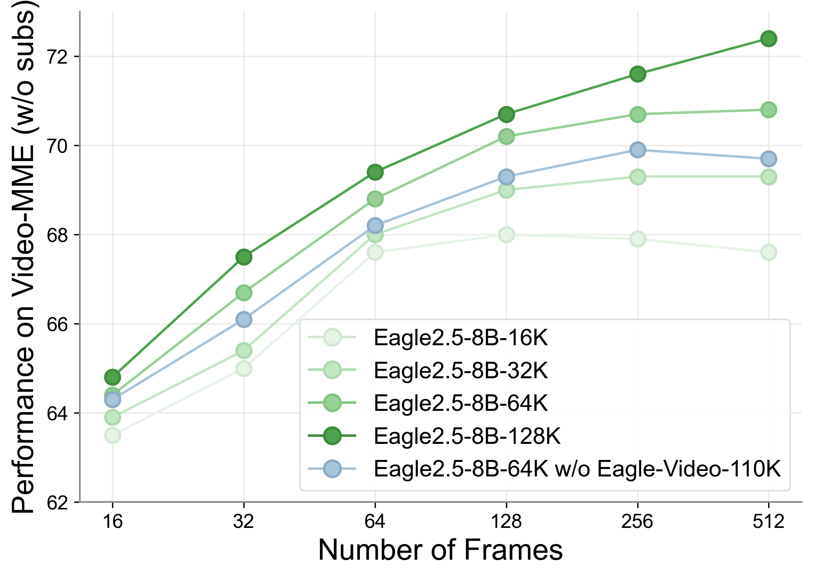

Why Long-Context Understanding?
Despite significant advances in multimodal learning, many vision-language models (VLMs) remain focused on short-context tasks, with long-context understanding under-explored. This gap is particularly evident in both long video comprehension and high-resolution image/video understanding, where the processing of extended visual contexts remains an open challenge.
Challenges in Long-Context VLMs
The development of long-context VLMs is still in its early stages, hindered by fundamental challenges in dataset construction, architecture design, training strategies, and computation/memory bottlenecks. While prior studies have explored extending context length, key limitations remain: suboptimal performance compared to proprietary models, inconsistent improvements as visual input increases, and unclear optimal training strategies.
Eagle 2.5: Consistent Performance Scaling
Unlike models solely optimized for handling long multimodal sequences without improving performance, Eagle 2.5 benefits from increased input length, leading to consistent performance gains besides merely accommodating longer inputs. Our model achieves superior context coverage and exhibits consistent performance scaling with increasing frame counts, attaining competitive results compared to larger models like GPT-4o and Qwen2.5-VL-72B while maintaining a significantly smaller parameter footprint.

SOTA Performance across Image and Video Understanding
Eagle 2.5 demonstrates exceptional performance across a wide range of image and video understanding benchmarks, achieving competitive results compared to both open-source and proprietary models with significantly larger parameter counts.
Video Understanding
Eagle2.5-8B shows remarkable capabilities on multiple video benchmarks, achieving 74.8 on MVBench, 82.0 on Perception_test, and 72.2 on EgoSchema, outperforming similar-sized models like InternVL2.5-8B (72.0) and Qwen2.5-VL-8B (69.6, 70.5, 65.0). It particularly excels in long-form video understanding with 77.6 on MLVU and 66.4 on LongVideobench, surpassing even InternVL2.5-78B (75.7, 63.6). On VideoMME (without subtitles), Eagle 2.5 achieves 72.4, coming extremely close to 72B parameter models while using far fewer parameters.

Image Understanding
Eagle2.5-8B demonstrates versatile image understanding across document comprehension (94.1 on DocVQA, 87.5 on ChartQA), information extraction (80.4 on InfoVQA, 83.7 on TextVQA), and optical character recognition (869 on OCRBench). The model also shows balanced capabilities in general perception and reasoning tasks (66.2 on MMstar, 76.7 on RWQA, 81.7 on MMB₁.₁), domain-specific knowledge (55.8 on MMMU, 84.5 on AI2D), visual hallucination assessment (54.7 on HallB), and even mathematical reasoning (67.8 on MathVista).

Training Strategy
Our approach contains two key components to achieve effective long-context training: first, an information-first sampling strategy that establishes optimal sampling criteria; and second, a progressive training schedule based on this strategy, which directs the entire model training process.

Information-First Sampling
In multimodal training, the sampling of visual content is essential. Multi-image documents typically comprise dozens of pages with ultra-high-resolution images, while video content can vary drastically in length - from mere seconds to hours. To effectively manage this diversity, we present information-first sampling to promote information preservation from both visual and semantic dimensions.
- Image Area Preservation (IAP): Traditional tiling methods divide an image of size W × H into a rigid grid of tiles. While effective for handling high-resolution inputs, these approaches often distort the original image geometry through improper aspect ratio handling. To address this, we propose an area-prioritized tiling strategy that optimizes two key objectives: area preservation and aspect ratio fidelity.
- Automatic Degradation Sampling (ADS): VLMs require careful allocation of sequence length budgets between visual and textual inputs. We propose Automatic Degradation Sampling (ADS), an all-context-centric strategy that dynamically optimizes this balance. ADS employs a dual-phase degradation process: temporal degradation first optimizes the sampling of frames or pages, followed by tiling degradation that maximizes the use of available context.
Post-Training Schedule
We introduce a comprehensive post-training framework consisting of two complementary strategies:
- Mixed post-training: Our ADS method adaptively adjusts each training sample to the maximum sequence length, providing a frame-agnostic training paradigm. We implement a mixed training strategy with length-balanced packing to optimize performance uniformly across the entire spectrum of context lengths.
- Progressive mixed post-training: For scenarios with large maximum sequence length values, we propose a progressive mixed training methodology that gradually exposes the model to increasingly larger sequence lengths, systematically enhancing its capacity to process extended contexts.

Addressing Insufficient Video Length in Existing Datasets
Existing video datasets often contain videos that are too short for comprehensive long-context understanding. Eagle-Video-110K addresses this limitation by curating a diverse collection of longer videos from multiple sources including Vidchapters, MiraData, InternVid-10M, Panda-70M, Vript, Shot2story, ViTT, and WebVid-10M. Using a diversity-driven strategy with CLIP embeddings and similarity thresholds, we identify and select novel videos that significantly extend the average duration available for training and evaluation.

Dual Annotation Pipeline for Comprehensive Understanding
Eagle-Video-110K features a novel dual annotation pipeline that combines both top-down and bottom-up approaches for comprehensive video understanding. In the top-down approach, we leverage human-annotated chapters as semantically meaningful video segments, generating chapter-level dense captions with GPT-4o and long-form QA pairs with GPT-4. Simultaneously, our bottom-up approach focuses on localized spatiotemporal details by generating clip-level QA pairs enhanced with time interval references and textual context anchors. This hierarchical methodology enables both fine-grained temporal understanding and high-level semantic comprehension, creating a dataset that effectively supports long-context video reasoning.

Impact on Video Understanding Performance
Eagle-Video-110K significantly enhances model performance across both mainstream long and short video benchmarks. Most notably, it substantially improves the model's capability to handle high frame counts (≥128 frames) by providing training data with longer videos that were previously absent in open-source training sets. This improvement is particularly evident on the Video-MME benchmark, where Eagle 2.5 trained with Eagle-Video-110K demonstrates consistent performance scaling with increasing frame counts, unlike other models that plateau or degrade with longer inputs.
